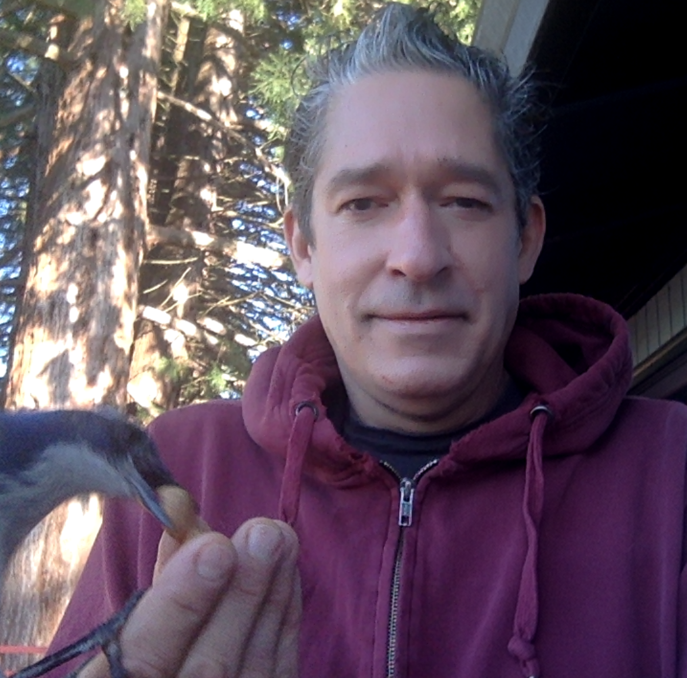

Get to Know Us
Here is a listing of the faculty mentors in the program. These are the faculty who have experience in their respective Superpowers
Dene Grigar, PhD
Director & Professor
Email: dgrigar@wsu.edu
Personal Site: http://www.nouspace.net/dene
Dene (pronounced Dee-Nee) Grigar is the director of the CMDC in the Department of Digital Technology & Culture. She is incredibly passionate about preserving digital literature and devices, specifically through her work on the Electronic Literature Lab. Towards the end of your time at WSUV, you will meet with Dene about the Senior Seminar capstone course. It may seem daunting when you get there, but Dene is super supportive and excited for you to be a part of something great!
Areas of Expertise:
Digital Curation & Preservation, Multimedia Design, Project Management
Classes:
- DTC 392 Video Games Theories and History
- DTC 497 Senior Seminar
- DTC 338 Special Topics, Hypertext Systems & Hypernarrative
John Barber, PhD
Professor, Career Track
Email: jfbarber@wsu.edu
Personal Site: http://www.nouspace.net/john
Dr. John Barber specializes in usability, accessibility, and how we use technology as tools to solve real world problems. Dr. Barber is not only a professor within the program, he is a student mentor and an artist. Dr. Barber is working on some on-going research projects regarding sound based mediums. Check out Reimagined Radio at http://www.reimaginedradio.net/index.html.
Areas of Expertise:
Radio Art, Usability Studies, Digital Storytelling
Classes:
- DTC 356 Information Structures
- DTC 375 Language, Texts and Technology
- DTC 499 Special Problems
- DTC 338 Special Topics, Sound-Based Storytelling
Will Luers, MFA
Assoc. Prof., Career Track
Email: wluers@wsu.edu
Personal Site: http://will-luers.com/
Will Luers was hand-selected by Dene Grigar for “Narrative Walks,” a class taught using google maps images and was hired on part-time. Over time, Dr. Grigar pushed Will to come into the CMDC program full-time. Prof. Luers will be your guide through specialized projects that include video production, narratives, website building, and digital publishing. These projects are the key to your portfolio.
Areas of Expertise:
Digital Publishing, Web & Mobile Design, Video, Digital Storytelling
Classes:
- DTC 208 Introduction to Digital Cinema
- DTC 354 Digital Storytelling
- DTC 355 Multimedia Authoring
- DTC 477 Advanced Multimedia Authoring
- DTC 491 Advanced Digital Cinema
- DTC 338 Special Topics: Digital Publishing
Michael Rabby, PhD
Assoc. Prof., Career Track
Email: michael.rabby@wsu.edu
Personal Site: https://twitter.com/michaelrabby
Professor Rabby is the head of the Social Media Certificate program, and teaches most of the courses involved with it. Being incredibly involved in the social media marketing space in the Portland/Vancouver area, his lectures translate to the field very well. If he isn’t talking about the Houston Astros, reality TV, or shopping malls, he’s teaching you about how to be a social media expert.
Areas of Expertise:
Social Media, Media Communication, Quantitative Research
Classes:
- DTC 101 Introduction to Digital Technology & Culture
- DTC 330 Social Media Case Studies
- DTC 331 Social Media Practices
- DTC 475 Digital Diversity
Brenda Grell, MFA
Assoc. Prof., Career Track
Email: brenda.grell@wsu.edu
Personal Site: http://brendajeangrell.com/
Professor Brenda Grell instructs all about multimedia design as well as 2D and 3D animation. She is super helpful and supportive when you get stuck on a project, and is overall a pleasure to work with. If you’re in the CMDC program, you’re likely going to have one or two classes with Brenda, and they will be some of the best classes you take!
2D & 3D Animation, Video, Multimedia Design
Classes:
- DTC 201 Tools and Methods for Digital Technology
- DTC 338 Special Topics, Building VR Environments
- DTC 435 Advanced Animation
- DTC 499 Special Problems
Chris Dreger, MFA
Visiting Lecturer
Email: christopher.dreger@wsu.edu
Personal Site: http://www.chrisdreger.com/
Professor Chris Dreger is a professional VFX and motion graphic artist turned CMDC professor. He has real experience from the industry working for Bent Image Lab on numerous different projects, especially commercials. Specializing in all things multimedia design and video post-production, his classes are very fun, working mainly in Adobe Premiere Pro, After Effects, Illustrator, and Photoshop.
VFX, Media Design, Motion Graphics, Compositing
Classes:
- DTC 336 Multimedia Design
- DTC 436 Advanced Multimedia Design
- DTC 478 Usability and Interface Design
- DTC 338 Special Topics, Digital Compositing and VFX
Richard Snyder, PhD
Adjunct Professor, Associate Director of the Electronic Literature Lab
Email: richard.snyder@wsu.edu
Personal Site: https://www.linkedin.com/in/richard-snyder-12aba298/
Richard Snyder is one of the newer faculty members who helps Dene with the Electronic Literature Lab as well as teaching courses like multimedia authoring and information structures. He is very kind and helpful, and is always eager to answer any questions people have about the ELL.
Data Visualization, Digital Storytelling
Classes:
- DTC 209 Introduction to Data Visualization
- DTC 355 Multimedia Authoring
Ted Fordyce, MA
Academic Advisor
Email: tfordyce@wsu.edu
Personal Site: http://directory.vancouver.wsu.edu/people/ted-fordyce
Being the advisor for all CMDC students, Ted helps everyone figure out their path in the CMDC program. If you have any questions about the specifics of being a CMDC student such as certificate programs, credits, or current standing, Ted is the person to contact and will be incredibly helpful along the way. He also teaches courses when he can, which I would highly recommend taking!
Hypertext Theory, Media Studies
Classes:
- DTC 475 Digital Diversity
Ed McDonald, MFA
Adjust Professor
Email: edward.mcdonald@wsu.edu
Personal Site: https://linkedin.com/in/edward-mcdonald-93956124
Professor Ed McDonald is one of two professors who you will likely start the program with by taking DTC 101. He is incredibly passionate about digital technology and the history behind it. Besides him talking about the electronic music scene in Detroit or the wonders of pub culture in the UK, he’s lecturing about the importance of the foundations of digital technology and culture.
Multimedia Design, Media Theory
Classes:
- DTC 101 Introduction to Digital Technology & Culture
Greg Philbrook
Instructional Technician
Email: greg.philbrook@wsu.edu
Personal Site: https://directory.vancouver.wsu.edu/people/greg-philbrook
Greg is a magical wizard that can get anything done. When it comes to your student accounts and any issues on the “back-end” Greg is your guy. Greg also provides students with recording equipment and any other devices available to help you with your creative works. You can reach Greg through Slack fairly easily, however when any problems arise, the entire department relies on him. Be nice and courteous and Greg will be there.